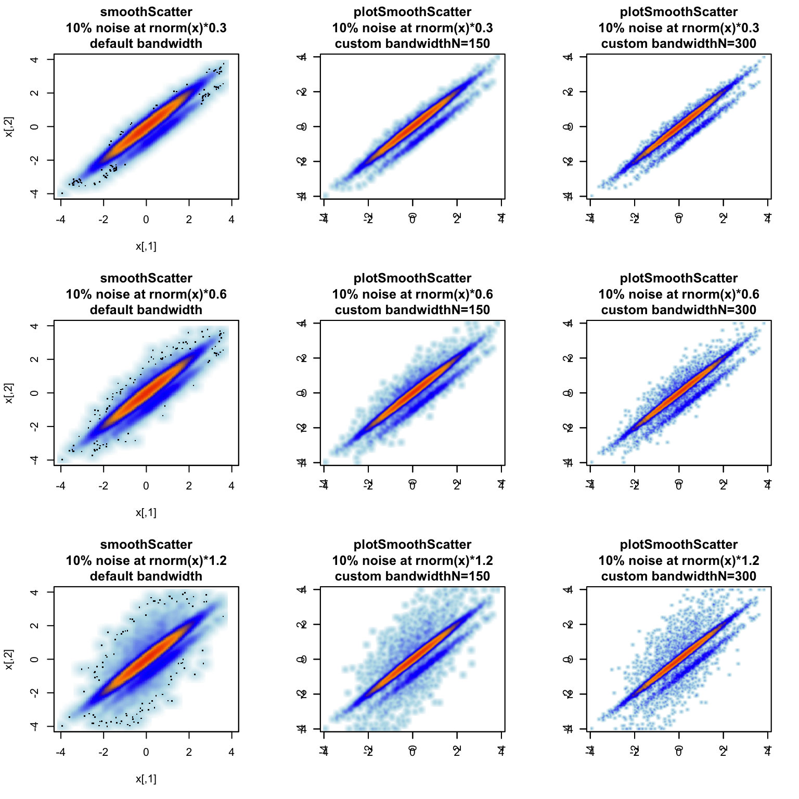

The goal of jamba is to provide useful custom functions for R data analysis and visualization.
A short overview of available methods:
The plotSmoothScatter() function provides an alternative to the base smoothScatter() function. It enhances the default bandwidth, which increases visible detail in the image. It also enables the parameter useRaster=TRUE which creates a rasterized image instead of using individual polygons to display each pixel in the plot. The useRaster=TRUE parameter can vastly decrease file space, memory requirements when opening the file, and speed of creating and rendering figures.
The panels below compare the default smoothScatter() (left column) to plotSmoothScatter() using two levels of bandwidth detail.
plotSmoothScatter(doTest=TRUE);
The mixedSort() function is an optimization and extension of a similar function in the gtools package, called gtools::mixedsort(). Due credit to Gregory R. Barnes for initial implementation, which inspired this function.
The mixedSort() function was driven also by the desire to sort tens of thousands of gene symbols and micro-RNAs (miRNAs) efficiently, and based upon a known order. Also, because miRNA nomenclature includes a dash ‘-’ character, numbers with a preceding “-” are no longer negative values during this sorting algorithm, unless overridden. For example “miR-2” should sort before “miR-11”, and after “miR-1”.
| sort | mixedSort |
|---|---|
| miR-1 | miR-1 |
| miR-12 | miR-1a |
| miR-122 | miR-1b |
| miR-1a | miR-2 |
| miR-1b | miR-12 |
| miR-2 | miR-122 |
Note: it took roughly 12 seconds to sort 43,000 gene symbols using gtools::mixedsort, and roughly 0.5 seconds using mixedSort.